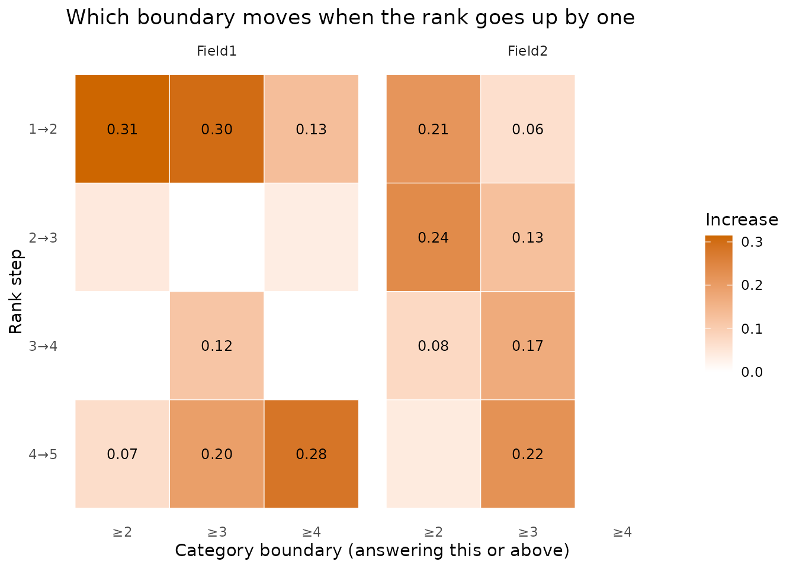

Plot which category boundary moves at each rank step
Source:R/plotRankUpShift_gg.R
plotRankUpShift_gg.RdTakes an ordinal Ranklustering result from exametrika::Biclustering()
(method = "R") and draws, for every field, a heatmap of how much the
probability of answering each category or above rises when a respondent goes
up one rank. Rows are the rank steps (1 to 2, 2 to 3, ...) from top to
bottom, columns the category boundaries. It is the ggplot2 version of
plot(x, type = "RankUpShift") in exametrika.
Usage
plotRankUpShift_gg(
data,
fields = NULL,
title = TRUE,
colors = c("darkorange3", "steelblue"),
label_min = 0.05,
digits = 2,
show_legend = TRUE,
legend_position = "right"
)Arguments
- data
An object of class
c("exametrika", "ordinalBiclustering")fitted withmethod = "R".- fields
Integer vector of the fields to draw. Default is all fields.
- title
Logical or character. If
TRUE(default), a default title is used; ifFALSE, none; a character string is used as the title.- colors
Character vector of length 1 or 2: the colour for increases and, optionally, for decreases. Default
c("darkorange3", "steelblue").- label_min
Cells whose absolute value is at least this are labelled with the value. Default 0.05;
Infturns the labels off.- digits
Number of decimals in the cell labels. Default 2.
- show_legend
Logical. Show the colour key. Default
TRUE.- legend_position
Position of the colour key. Default
"right".
Details
A cell is \(P_f(X \ge b \mid c + 1) - P_f(X \ge b \mid c)\): the change of
the upper-cumulative field reference profile from rank \(c\) to
\(c + 1\) at boundary \(b\). Under the isotonic estimation it is never
negative; under GTM a negative cell is an order violation and is shaded in
the second colour. exametrika 2.3.0 and later return the values as
RankUpShift; for a fit from an earlier version they are computed
here from the field reference profile in the same way.
Examples
# \donttest{
library(exametrika)
result <- Biclustering(J5S1000, ncls = 5, nfld = 2, method = "R")
plotRankUpShift_gg(result)

# }